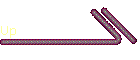
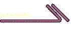

Make a list of your favorite sites on the World Wide Web. You can add a hyperlink to another web site, or replace an existing one, by selecting the text and choosing the Hyperlinks command from the Insert menu.
The Microsoft Network
Yahoo!
My Favorite Site